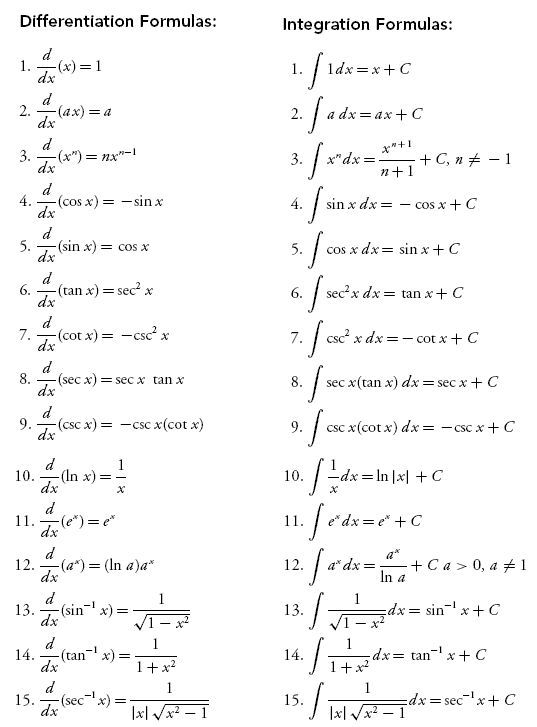

Definition 1. Antiderivative or Indefinite integral is the reverse operation of derivative. Suppose a function has derivative , then the antiderivative of is

Where is a constant.
Definition 1. Antiderivative or Indefinite integral is the reverse operation of derivative. Suppose a function has derivative , then the antiderivative of is
Where is a constant.
Since the antiderivative is just the reverse operation of derivative, thus we have a set of formulas
